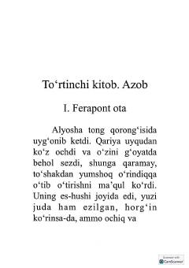

AKDostoyevskiyning chuqur falsafiy va psixologik mazmunga ega mashhur romanining ikkinchi qismi.
Fedor Dostoyevskiyning mashhur "Aka-uka Karamazovlar" romanining ikkinchi qismi. Kitobda inson ruhiyatining murakkab qirralari, axloqiy va diniy masalalar, aka-uka Karamazovlarning taqdiri hamda qariya Zosimaning so‘nggi damlari bayon etiladi.